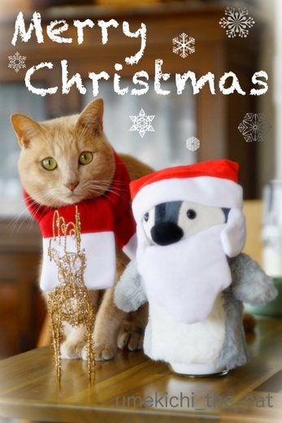

ちょっと早めの Merry Christmas [梅吉]
クリスマスのプレゼントと今年も一年頑張りましたねって気持ちを込めて
梅吉のまたたびキャンディを新調しました＾＾
時期が悪かったのか商品は売り切れのものが多くまたたびキャンディも「柄おまかせ」のみ。

届いたのは梅吉のテーマカラー、オレンジの可愛いキャンディ。
（他２柄の3個セット。またたびクッキーのおまけが付いてきました＾＾）
好きな柄＆色でラッキー！！
クリスマスまで待てずに早速梅吉にプレゼントしましたよ。
最初は「これは、なんやったっけ・・・？」って顔してましたが匂いを嗅いで豹変 (;^ω^)
ちょっと長い36秒の動画ですがお楽しみください！！
（音は出ません）
大変喜んでいただきました0(≧▽≦)0
皆様にも何か嬉しいプレゼントがありますように！！
さて、一足早いですが梅吉から皆様へささやかな感謝の気持ちを込めて♡

楽しいクリスマスの週末をお過ごしくださいませ＾＾
来週月曜日、24日の更新はお休みしますね。
別にどこに行くわけでもありませんがクリスマス休暇としゃれ込みます(^_－)☆
次回の更新は27日。年内最後の更新になる予定です。

トナカイさん落下の５秒前 (⌒_⌒;
自立しているぺんちゃんは中にシュガーポットを突っ込みましたw
パペットでよかったわ！
カードはもう一案ありました。
とっても迷ったのです・・・・せっかくだから載せちゃいます(〃▽〃)

カフェオレ色の梅吉

梅吉 2023年8月10日 永眠


梅吉と出会った譲渡会

犬猫の理由なき殺処分ゼロ
妄想広告
UMEKICHI 光

爆発的に早い！
時々攻撃的！
Thanks to Mr.Boss365
爆発的に早い！
時々攻撃的！
Thanks to Mr.Boss365

猫にマタタビって言うけど、凄い反応だね（ﾟ□ﾟ）
by 英ちゃん (2018-12-20 02:23)
動画面白いです。特に「!!」のところが好き。梅吉さんカードもありがとねっ。
by zombiekong (2018-12-20 04:02)
まさに豹変ですね＾＾
by ぽちの輔 (2018-12-20 07:02)
梅吉さん(^^♪ 嬉しいクリスマスプレゼントですね！
すごい楽しそうです(#^.^#)
by きぃ (2018-12-20 07:49)
あははは(笑)
梅吉君の豹変っぷりがおかしいｗｗ
プレゼント良かったねえ、梅吉君^^
うちはオモチャ買いそびれたけど、
またたびキャンディの在庫がまだあるから、
新しいのを出してあげようと思います^^
クリスマスカードありがとうね♪
のんびり素敵な日を過ごしてニャ～～～
by リュカ (2018-12-20 10:14)
マタタビキャンディー、最初のハテナからの豹変で活動的な梅吉さん。
オレンジカラーで魅力倍増のキャンディーなのですね。
クリスマスカードの梅吉さんの正ちゃん帽も可愛いですね〜
目線、頂きました（笑）
『Merry Christmas！』
クリスマス休暇、良い響きですね〜
by kiki (2018-12-20 10:29)
おはようございます。
梅吉君の匂い嗅ぎ嗅ぎ？目の色が変わった感じです。
動画・モノクロ反転画像？効果的です。
おっとさんにも「またたびキャンディ」以上のプレゼントよろしくです。
ちょっと早いですが、メリークリスマスです。梅吉君にマタタビケーキを！！
クリスマス休暇！！楽しんでで下さい！？(=^･ｪ･^=)
by Boss365 (2018-12-20 11:47)
わはは(≧▽≦) 豹変ぶりが最高！
興奮して箪笥の上から落ちちゃうかと思いました^^;
マタタビキャンディ満喫ですね～。
ウチにも同じものがありますが反応はいま一つ。
同じお店のキッカー「またたびミネット」には抱き着いて蹴り倒します。
同じまたたびなのに何が違うんだか？？？
素敵なクリスマスカードですね♪
やっぱり～トナカイさんが無事で済むわけないと思ってました^^
どうぞ良いクリスマス休暇を！
ウチは週末に今年最後のこてつ通院だし、私も休肝中だし・・・でっかいクリスマスケーキでも丸かぶりしようかな(#^^#)
by ゆきち (2018-12-20 12:32)
梅吉さんサンタですね(^ ^)
無事にカテーテル終わりまし！
by ma2ma2 (2018-12-20 14:04)
またたびキャンディー、オレンジ色でかわいい＾＾
梅吉さん、豹変するとこがサイコー♪
楽しそうですねえ＾＾
クリスマスカードも決まってます！
白いお帽子も可愛い＾＾
by sana (2018-12-20 15:10)
！！までの間、どんなことが頭をよぎっているんだろうねｗ
私も寝ているまりもの鼻先におやつを近づけていつ気づくかやるの。
ひなちゃんは、お鼻にくっつけないと気づかない・・・。
梅吉くんは、プレゼントに大喜びです～。
これだからプレゼントはやめられない(*^-^*)
可愛い梅吉サンタのクリスマスカード。
どっちも素敵！ちょっと早いけどメリークリスマス♪
ちぃさんご一家も楽しいクリスマス休暇をお過ごしください。
by emi (2018-12-20 16:56)
自分もマタタビの枝を愛猫にプレゼントしたことがありましたが、狂喜乱舞でした。
梅吉さんも本当に喜んでくれて幸せですね(^^)
by kou (2018-12-20 19:51)
豹変するときの梅吉さんの「おっ！」っていう表情がいいですね。^^)
喜ぶ姿も最高！クリスマスカードもとても素敵です。
もう年末かあ。早いなあ。。。
by yes_hama (2018-12-20 22:17)
クリスマス休暇、どっぷりしゃれ込んでくださいね。
梅吉さんと一緒に＾＾
by riverwalk (2018-12-20 23:35)
梅吉さん、大興奮ですね^^
by ニコニコファイト (2018-12-21 07:06)
さすがマタタビパワー！
大豹変っぷりが楽しいですぅ～～～！
すてきなクリスマス休暇になりますように。。。
by よーちゃん (2018-12-21 12:08)
またたびに気付いた時の顔がいいわ～(*^^*)
それにしても、部屋が美しいわ。見習いたい(:_;)
by palpal (2018-12-21 16:18)
「うん？これはなんだ？」の表情から
マタタビキャンディと気付いた時の表情の違いが(⌒-⌒; )
梅吉さん、ヒャッハーしてますねぇ( ^ω^ )
ここまでテンション上がってくれると
あげた甲斐があるなぁ♪( ´▽｀)
by ニッキー (2018-12-21 22:47)
カード、どちらもかわいいです。
ありがとうございま~す♪
梅吉さん、まわってる、喜んでる、カワイイ＾＾
よきクリスマスを！
by ふにゃいの (2018-12-22 11:07)
うひょひょ(^m^) とつぜんスイッチが入りましたにゃあ♪
そのあとのハシャギっぷりも、どすこいですよ。
猫型の爪切りハウスが、めちゃ使い込まれてて、こっそり笑う(^。^)
by のらん (2018-12-22 14:22)
梅さま、楽しいプレゼントをもらえましたね^^
今年最後の「コレジャナイ」顔を見られなかったのは
ちょっと残念？（笑）
動画がめちゃうま！おもしろい（≧∀≦）
サンタさん衣装はぺんちゃんが・・・^^;
by Ja-Kou66 (2018-12-23 15:49)
バッチリカメラ目線の梅吉さん♡
・・と目が合ったような気になる
素敵なクリスマスカードですね！
またたびキャンディーの動画も
梅吉ファンには最高のプレゼント、
楽しませて頂きました(*^O^*）。
by うりくま (2018-12-23 17:20)
☆;:*:;☆Merry Christmas☆;:*:;☆
♪o(^0^o)♪o(^-^)o♪(o^0^)o♪
きよしこのよる ほしはひかり
すくいのみこは みははのむねに
ねむりたもう ゆめやすく
素敵なクリスマスを～ヽ(‘ ▽‘ )ノ
by 英ちゃん (2018-12-24 15:09)
こんにちは。
ちぃさん家族は「静かな時間」を過ごしていると思いまが、梅吉君に「またたびキャンディ」プラスアルファのプレゼントがある事を願ってます。最近は、西洋のように家族や親しい友人と過ごすクリスマスが増えてきたような気がします。ちぃさん家族は正解です！！小生宅、穏やか過ぎて刺激が欲しい感じです？小生、曹洞宗の仏教徒ですが、メリークリスマス！！心が喜びに満ちたクリスマスをお過ごし下さい！？(=^･ｪ･^=)
by Boss365 (2018-12-24 16:32)
梅吉さん。ちぃさん。メリークリスマス！
マタタビのキャンディ、ガンガン食いついてましたねぇ(^ ^)
ワシのアメちゃんやーーー！という、
梅吉さんの悦びが聞こえてきそうでした。
いつもながら、niceリアクション♪
さて、マイブログはお休みモードに入りますが、また遊びにきますねー(^ ^)
これからも、どうぞよろしくお願いします！
by morichan (2018-12-24 21:17)
おおぉ～( ´艸｀)
梅吉さん、気付いてしまった！( ´∀｀ )
大喜びで、プレゼント大成功でしたね♪
Xmasカードも、すてきです☆
私は、何だか今年は、全然、年末やクリスマスの
実感がわかない不思議な年なんですよ…。
何でかな～＾＾；
ちいさん、梅吉さん、ご主人様、
素敵なクリスマスをお過ごしくださいね(*´ω｀*)
by マーヤ (2018-12-25 18:53)
英ちゃんさん＞
ペットショップで売っているマタタビには反応しないのですが
ここのショップのはすごい反応するんですよw
やばい系のまたたびなのかしらwww
zombiekongさん＞
どんな編集にしようか迷うことなく「！！」にしました＾＾
これ以外に考えられない、というか梅吉「！！」になってますよねー ( ´艸｀)
梅吉のクリスマスカード、喜んでいただいて嬉しいです♪
ぽちの輔さん＞
立ちあがる動作がばね仕掛けみたいですよねwww
猫だけど豹変！同じ科だしー(≧▽≦)
きぃさん＞
喜んでもらって何よりでした＾＾
他のマタタビには反応しないのですがこのお店のは特別なんです！
どんなマタタビ使っているんだろうって思ってますw
リュカさん＞
ぴきーんっ！！と立ちあがるところなんて私も笑っちゃいましたw
キャンディのおまけにマタタビビスケットが付いてきたんだけど
食いつきが良すぎて口に押し込もうとするのでただいま封印中(-_-メ)
おもちゃは間に合わせに買っても外れそうな気がするので
猫の家さんの商品が出揃うのを気長に待つことにします〜。
クリスマスはなんだかんだやることがあったので
お正月休みこそ何にもしないでゆっくりしたいですw
(今年も帰省はしません。）
kikiさん＞
「正ちゃん帽」ツボでしたー0(≧▽≦)0
幼い頃に流行っていたと思います！
たぶん私も被せられたはず(*>艸<)
それが今巡り巡って梅吉にw巡り合わせ、ですね。
クリスマス休暇、ニューヨーカーのようにプレゼントを買いに行ったり
ホームパーティーをしたりはしませんでしたが・・・
毎朝梅吉にアゴを「かぷっ」と甘噛みされて起こされる幸せを味わいましたwww
Boss365さん＞
実際に一瞬こんな反転画面のような空気になったのですよー(*>艸<)
梅吉が弾かれたように「ぴきーん！」と立ち上がって
私もびっくりしましたwww
我が家はちょっとしたクリスマスディナーをお家で食べるくらいで
梅吉はコスプレしたりピカピカ光るツリーをガブッとしたり
またたびプレゼントをもらったり。楽しんでくれたかな0(≧▽≦)0
ゆきちさん＞
ミネットととっても迷ったのですが・・・
梅吉は「えびちゃん」以外のキッカーにはあまり反応しなくて
確実に喜ぶもの、とキャンディにしちゃいました。
おまけにまたたびビスケットが付いてきたのですが・・・
食いつきが最高すぎて食べそうな勢いでした！
口に押し込もうとする仕草もしたので
これはこてつくんはNGおもちゃだなと思ったので念のためお知らせまで。
休肝日、続いていらっしゃるのですね・・・
そろそろ暴れるぞー！と肝臓さんもやる気満々かもしれませんね！
体調が整って美味しいお酒が飲めること、願ってます(^_－)☆
ma2ma2さん＞
ぺんちゃんも登場してサンタファミリー、でしょうか＾＾
広島の牡蠣はいかがでしたか？
sanaさん＞
思ってもみなかったオレンジ色のキャンディ
開けて「わぁ〜」って喜んじゃいました＾＾
久しぶりのまたたびキャンディは興味なくなったかと思ったら・・・
ばね仕掛けのように飛び起きて私もびっくりしました (⌒_⌒;
梅吉にクリスマスの帽子をかぶせたい・・・！
コラージュで叶いました♪
emiさん＞
「！！」はシナプスが繋がった瞬間って感じで笑っちゃいました＾＾
この間梅吉の頭の中には初めてもらったまたたびキャンディの記憶が
蘇ってきていた！？(*>艸<)
喜んで遊んでくれて何よりのプレゼントになりました＾＾
ひなちゃん、つんつんされないと気づかないのね。
それも可愛い反応だわー0(≧▽≦)0
クリスマス休暇はいつもと変わりなく家族３人過ごしましたよ。
いつもと同じが一番！
kouさん＞
kouさんのプレゼントする枝は天然のモノかしら・・・
採り立ては一段と猫大喜び、間違いなしでしょうね＾＾
実は梅吉は反応するまたたびとそうでないのがあるのです。
違いってなんなのでしょうね(◎_◎)
yes_hamaさん＞
すっごく「おっ！」ってなってましたよー0(≧▽≦)0
梅吉から効果音が出るなら「ジャジャ〜ん」って鳴っていたと思いますw
クリスマスカード、お誉めいただいてありがとうございます！
クリスマスが終わったらあっという間に年末そして春・・・
一年が駆け足で過ぎていきますねwww
riverwalkさん＞
クリスマス休暇、満喫いたしました！
満喫し過ぎてみなさまへのお返事がすっかり遅くなってしまいました(｡-_-｡)
ニコニコフィアトさん＞
このまたたびだけは大興奮するのですヾ(*ΦωΦ)ﾉ
よーちゃん＞
ペットショップで売っているマタタビには反応薄なんですが
このお店のマタタビキャンディには大豹変w
毎回おニューを見せる瞬間が楽しみでなりません！
クリスマス休暇、満喫しましたよー＾＾
palpalさん＞
「！！」って付けなくても良いくらい「！！」って顔してますよね(*>艸<)
梅吉が遊んでいる動画は背景を取り繕ったバージョンですw
後ろがとっ散らかった動画の方が梅吉の動きが面白いんだけど
残念ながらお見せできないわー (⌒_⌒;
ニッキーさん＞
「これは・・・？マタタビキャンディやっ！！」と気づいた瞬間
すごい顔になって弾かれたように起き上がってきたので
びっくりしましたよ ( ´艸｀)
このまたたびは梅吉が唯一反応するものなので
プレセントはこれ以外考えられませんでした＾＾
次は新しいおもちゃを物色中です！
ふにゃいのさん＞
カード、どちらも捨てがたくw
お誉めいただいてありがとうございます！
「そんなに興奮しなくても・・」というくらい
喜んで倒けつ転びつ遊んでおりました＾＾
キャンディはおヨダでデロデロです (^_^;)
のらんさん＞
そうなんです！
突然のスイッチ、ばね仕掛けのように起き上がってきてびっくりですw
あああ・・・猫型爪切りハウス、笑われちゃったわぁ〜0(≧▽≦)0
お気に入りすぎて次のになかなか踏み切れませんwww
Ja-Kou66さん＞
猫の家さんのむいむいシリーズを買おうと思ったら軒並み売り切れw
新調するつもりではいたのでこちらのまたたびキャンディになりました＾＾
お！「コレジャナイ」顔ファンでいらっしゃいましたか！！
日々コレジャナイ顔はしているのですがなかなかカメラが間に合わずです・・・
先日は私がプロレスのお相手を務めようとしたら
「コレジャナイ」顔されました(-_-メ)
うりくまさん＞
クリスマスカードの梅吉の目線、お褒めいただきありがとうございます＾＾
カメラを構えるおっとの横で
必死におもちゃを振り回した苦労が報われました！
動画は私がお相手撮影はおっと。
おばか夫婦は梅吉動画、画像の品質向上に努めております(*>艸<)
英ちゃんさん＞
素敵なクリスマスメッセージ、ありがとうございます(´▽｀)
クリスマス休暇満喫しましたよー！
Boss365さん＞
あら！我が家も曹洞宗ですよー＾＾
いつか永平寺に行ってみたいです（信仰心からではなくw見物心www）
我が家のクリスマスの過ごし方は西洋スタイルというより
単に人ごみに出かけたくないだけという消極的理由かも (⌒_⌒;
刺激を求めるBoss365さん！？
梅吉をお貸ししましょうか(*>艸<)
梅吉がいる我が家は毎日刺激的ですwww
morichanさん＞
それです！わしのあめちゃんwww
私は大阪のおばちゃんとして「あめちゃん、たべるぅ？」と
言いながら近づくべきでした(-_-メ)まだまだ修行がたりませんw
ブログお休みは残念ですが遊びに来てくださるとのこと！
楽しみにしております♪♪
マーヤさん＞
「このかほりは・・・」と覚醒しました ( ´艸｀)
ペットショップに売っているマタタビにはあまり反応しないのに
このおみせのまたたびキャンディは本当に大好きなんです！
ハズレのないプレゼント、あって良かったです！
クリスマス〜年末の実感がない・・・
昔はクリスマスのわくわくとか
新年を迎える高揚感とかそれなりにあったのですが
今は年末年始はバタバタして嫌だなくらいにしか
感じられなくなりました(-_-メ)
by ちぃ (2018-12-25 19:45)